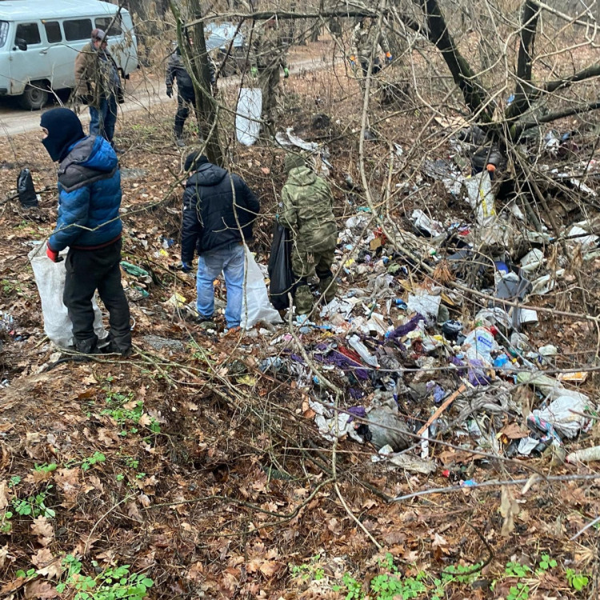

Що таке еко-волонтерство?

Еко-волонтерство — це важлива частина охорони навколишнього середовища, що передбачає активну участь громадян у збереженні природи та покращенні екологічної ситуації в їхніх містах і громадах. У Харкові є багато ініціатив, які дозволяють кожному долучитися до цієї справи.
Як можна допомогти:
- Участь у прибиранні парків та вулиць: Волонтери можуть долучитися до очищення природних територій від сміття.
- Посадка дерев та зелених насаджень: Відновлення зелених зон через посадку дерев є важливою складовою підтримки екології міста.
- Сортування сміття: Багато еко-волонтерів займаються організацією пунктів збору та сортування відходів.
- Екологічні акції та кампанії: Участь у заходах для підвищення свідомості серед населення щодо екологічних проблем.
- Допомога в організації освітніх заходів: Волонтери можуть допомогти у проведенні лекцій, тренінгів і майстер-класів для населення на екологічні теми.
Як стати еко-волонтером:
Щоб стати еко-волонтером у Харкові, потрібно звернутися до організацій, що займаються екологічною діяльністю, таких як:
- Громадські екологічні організації, які проводять акції з прибирання та озеленення.
- Місцеві еко-форуми, на яких організовуються збори волонтерів для участі в різних еко-проектах.
- Волонтерські центри, що співпрацюють з громадськими організаціями та екологічними проектами.